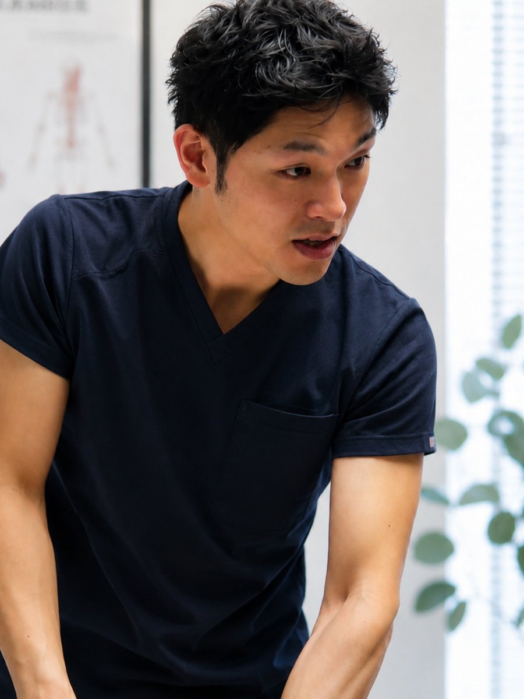
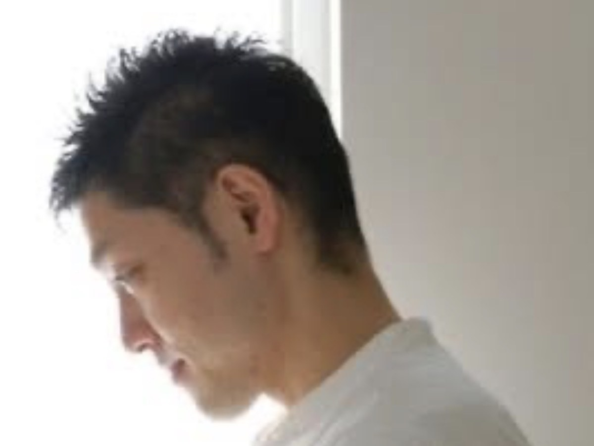
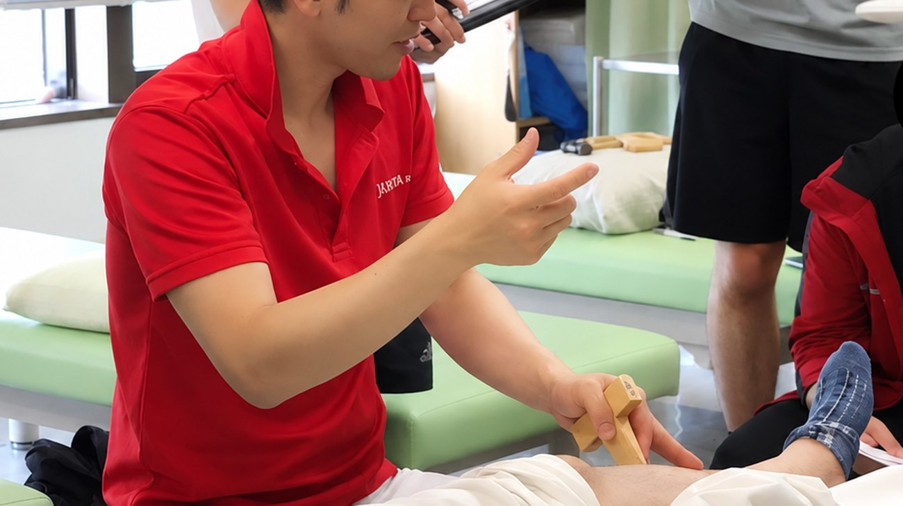

見立てをする人間について

理学療法士国家資格保有
新井りゅう（あらい りゅう）
理学療法学修士（東京都立大学大学院）
経歴
理学療法士として、長く臨床に従事しています。
急性期病院では、整形外科・内科・外科の病棟で、手術直後や治療中の方を担当しました。がんの緩和ケアにも関わりました。
回復期リハビリテーション病院では、脳卒中や骨折の後、生活へ戻っていく過程を見てきました。
老人保健施設・訪問リハビリテーション・整形外科外来では、退院後の生活の中で身体がどう変わっていくかを見てきました。
病院の中だけでなく、その後どうなるかまで見てきたことが、今の仕事の土台になっています。
なぜこの場所を始めたのか
長く現場にいると、同じ言葉を何度も聞きます。
「もっと早くやっておけばよかった」
動けなくなってから、後悔される方に何度も会ってきました。そのたびに、この方に3年前、5年前に会えていたらと考えます。
医療の現場では、病気や怪我が起きた後にしか関われません。けれど、身体の状態が変わり始めるのは、その何年も前です。
まだ動ける時期に、正しく見立てて、必要なことを伝える場所。それがこの場所を始めた理由です。

大切にしていること
必要のないことは、しません。長く時間をかければ良い、という考え方はとりません。手によるケアも運動も、必要だと判断したものだけを行います。
分かったことは、その場でお伝えします。身体に何が起きているのかを、ご自身が説明できる状態を目指します。専門用語で煙に巻くことはしません。
通い続けることを前提にしません。ご自身で身体を保てる状態が目標です。そのために必要な頻度を、正直にお伝えします。
できないことは、できないと言います。安全に対応できないと判断した場合は、お引き受けしません。医療機関の受診が必要な場合は、そうお伝えします。
教える立場として
現在も病院に勤務しながら、
- 専門学校で、理学療法士を目指す学生に徒手療法を教えています
- 歯科衛生士の方々に、予防の視点からの身体の見方をお伝えしています
- 企業研修や専門職向けのセミナーで講師を務めています
人に教える立場である以上、自分が行うことの根拠を、常に説明できる状態を保っています。

プレーテイング研究会のセミナーで指導している様子。
資格・実績
資格
- 理学療法士
- 理学療法学修士 東京都立大学大学院 人間健康科学研究科 理学療法科学域 博士前期課程 修了
- 徒手理学療法認定理学療法士
- 介護予防推進リーダー（日本理学療法士協会）
- 国家資格キャリアコンサルタント
- PHI Pilates Mat Ⅰ・Ⅱ Instructor
- PHI Pilates Reformer Ⅰ Instructor
- PHI Pilates Barrel Instructor
研修修了
- Fascial Manipulation®（筋膜マニピュレーション）Level Ⅰ・Ⅱ・Ⅲ 修了
- 日本PNF学会 上級コース 修了
- JAOMPT 上級コース 修了
著書
- 『REHABILITATION VIEW ムービーペイシェント編 パーキンソン病』分担執筆 メジカルビュー社
論文
- 脳卒中患者に対するバランスディスクの運動療法の検討 埼玉理学療法 2016
- 横断・機能的マッサージが筋に及ぼす影響 日本運動器徒手理学療法 2016
- 深部横断マッサージが拮抗筋の筋機能に与える影響 理学療法科学 2018
- 脊柱の変形を伴う変形性股関節症患者の治療経験 理学療法 2019
- 企業の勤労者における体脂肪率と2ステップテスト，30秒椅子立ち上がりテストの関係 理学療法科学 2019
- Intra- and inter-examiner reliability and minimal detectable change for different methods of measuring toe grip strength in healthy adults Journal of Physical Therapy Science
- Relationship between toe grip strength and dynamic balance in older adult patients with femoral neck fracture Journal of Physical Therapy Science
受賞
- 第25回 埼玉県理学療法学会 学会奨励賞
- 第44回 神奈川県病院学会 優秀賞
講師
- 専門学校 理学療法学科 非常勤講師（徒手療法）
- 埼玉県理学療法士協会 講師
- プレーテイング研究会 インストラクター
- 地域・企業・専門職向けのセミナー、講演
2007年より臨床に従事／現在も病院に勤務
ご利用が可能か確認したうえで、候補日時をご案内します。通常48時間以内にご返信します。
お電話でのご予約は承っておりません。